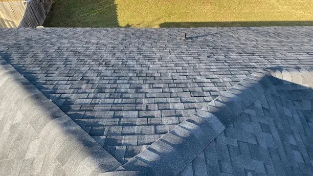

About Peak to Peak Roofing of Arkansas
At Peak to Peak Roofing of Arkansas, we believe every homeowner deserves a strong, reliable roof that protects their family and their investment.
Who we are
As a locally owned and fully insured roofing company, we proudly serve Cabot, Little Rock, and communities across Arkansas with honesty, quality, and care. We’re more than just a roofing company, we’re your neighbors. We understand the challenges Arkansas homeowners face, from storm damage to aging shingles, and we’re here to provide dependable solutions.
We are a locally owned, family-operated business with over 30 years of experience. We understand Arkansas weather and how to install a roof system that stands up to it. With honest estimates and clear communication we make the process simple from start to finish. Our family has resided in Central Arkansas since 1984 and we have developed many great relationships with the people and businesses in our community.
The company’s statements, from its website. Names of the owners are not published there.


Our mission
Our mission is simple.
- Deliver top-quality roofing services using proven materials and methods.
- Provide clear, honest communication from start to finish.
- Treat every home as if it were our own.
Why homeowners trust us
Locally owned & operated
Licensed & fully insured
Experienced with Arkansas weather conditions
Free, no-pressure estimates
Company statements. A licence number is not published on the company’s website, so none is shown here.
Here for your roofing needs
Whether you need a full roof replacement, fast storm damage repair, or a routine inspection, Peak to Peak Roofing of Arkansas is ready to help. We stand behind our work and are proud to be the roofing company homeowners across Central Arkansas turn to when they need protection they can count on.